Concept
「THREE DICEの料理とお酒を、うちのパーティーでも出してほしい。」
常連のお客様からいただいたその一言が、DICE KITCHENの始まりです。
カウンター越しにお届けしてきた一杯と一皿を、今度はあなたの会場へお持ちします。
料理は季節に合わせてご用意し、湘南ならではのしらすを使った一品もお楽しみいただけます。 「この料理を出したい」というご希望があれば、ご予算の範囲でできる限りお応えします。
東京のオフィスで120名様規模の企業ケータリングを担当したほか、ケバブやドリンクの屋台出店も経験してきました。 少人数のホームパーティーから大人数のイベントまで、安心してお任せください。
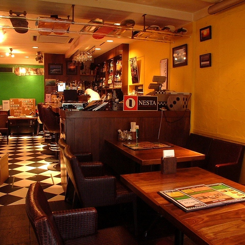
Reason
藤沢で18年以上愛されてきたフランクなBAR「THREE DICE」の料理とお酒を、そのまま会場へ。会場では気軽に楽しめるカクテルもお作りします。「このお酒を用意してほしい」というご希望にも、幅広く対応します。
季節に合わせた料理に、湘南ならではのしらすを使った一品を。「この料理を出したい」というご希望にも、ご予算の範囲でお応えします。
東京のオフィスで120名様規模の企業ケータリングを担当。ケバブやドリンクの屋台出店で培った段取り力で、大人数の会もスムーズに進めます。
Scene
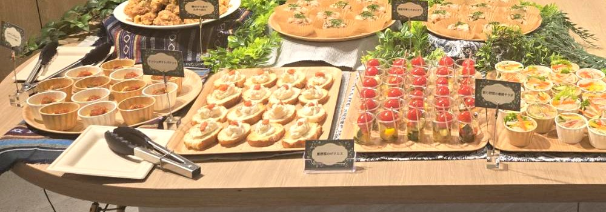
歓送迎会や周年パーティー、社内の懇親会に。オフィスでの120名様規模の実績もあり、大人数でも安心してお任せいただけます。
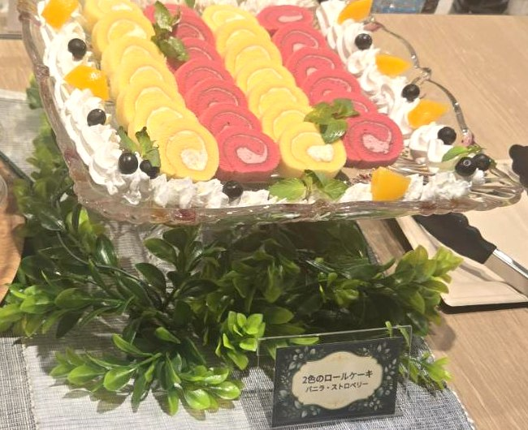
堅苦しくない、BARらしい和やかな雰囲気で。ご希望の料理やお酒で、おふたりらしいパーティーをつくります。
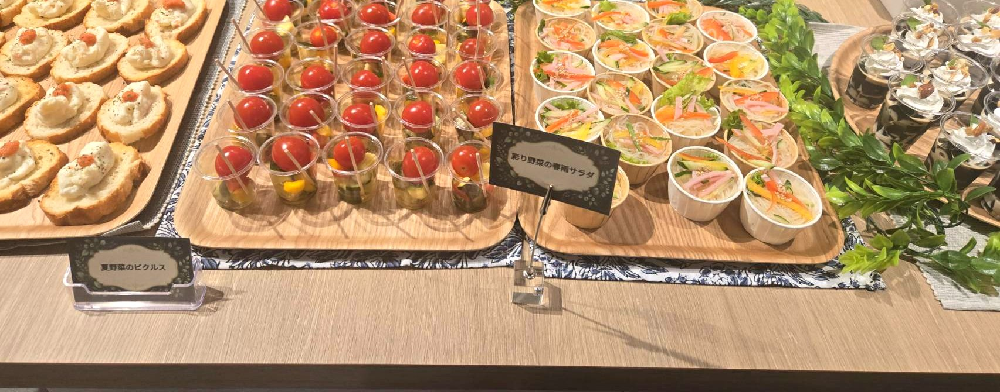
誕生日や記念日、仲間との集まりに。10名様から、ご自宅がそのままBARのような空間になります。
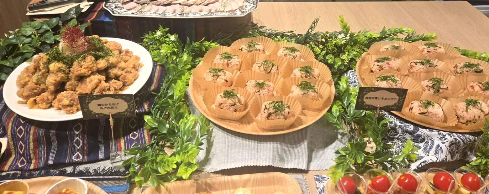
マルシェや展示会、撮影現場の差し入れにも。屋台出店の経験を活かして、屋外や大人数の会場にも対応します。
Plan
どちらのプランも設営費・スタッフ代込みの料金です。追加でかかるのは交通費のみ。
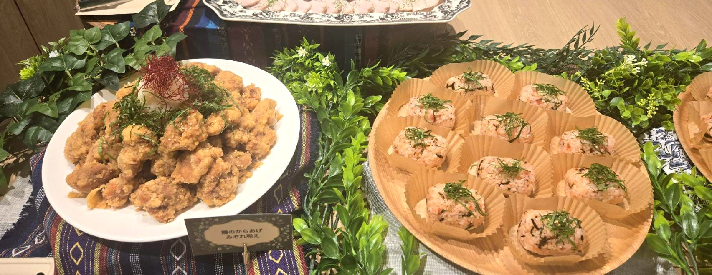
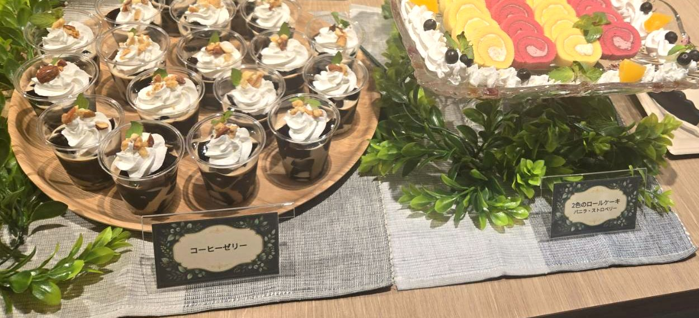
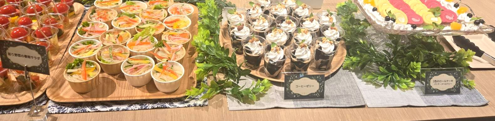
Voice
「【感想】」
— 【利用シーン・人数・属性】
「【感想】」
— 【利用シーン・人数・属性】
「【感想】」
— 【利用シーン・人数・属性】
Flow
フォーム・LINE・お電話からお気軽にどうぞ。原則として開催日の2週間前までにご連絡ください（お急ぎの場合もご相談ください）。
日時・人数・会場・ご予算・ご希望の料理やお酒・アレルギーの有無などを伺い、お見積もりをお出しします。屋外の場合は電源・水道・テントの有無も確認します。
内容にご納得いただけたらご予約確定です。メニューを決め、人数は3日前まで無料で変更いただけます。
準備に余裕をもつため、原則として開始の2時間前に会場へ伺い、設営します（会場のご都合に合わせてご相談も可能です）。お料理とドリンクの提供はスタッフにお任せください。
終了後の片付けまでこちらで行います。紙皿などの使い捨て食器を使うので、洗い物の手間もありません。お支払いは、個人のお客様は当日または事前のお振込みで、法人様は請求書による後日のお振込みにも対応しています。
Area
藤沢を中心に、湘南・横浜エリアへお伺いします。
藤沢市・茅ヶ崎市・鎌倉市・寒川町
横浜市・平塚市・大和市・逗子市・葉山町・綾瀬市
東京都内・その他の神奈川県内もご相談ください。東京都内のオフィスでの実績もあります。
※ 交通費はエリアや会場によって異なります。お見積もりの際にご案内します。
FAQ
10名様から承ります。100名様以上の場合もお気軽にご相談ください（東京のオフィスで120名様規模の実績があります）。
原則として2週間前までにご予約ください。お急ぎの場合も対応できますので、お気軽にご相談ください。
料理（飲み放題プランはドリンクも）に加えて、設営・提供・片付け・スタッフ代がすべて含まれています。別途いただくのは交通費のみです。
はい。ご予算の範囲で、できる限りご希望にお応えします。湘南のしらすを使った料理も人気です。
ビール・緑茶ハイ・ウーロンハイ・ハイボールと、ソフトドリンク（緑茶・烏龍茶・オレンジジュース・アイスコーヒー）をご用意します。ご希望で気軽なカクテルもお作りします。時間は2時間〜で、延長もご相談いただけます。
はい、ご希望のお酒があればご相談ください。お酒のお持ち込みも基本的に可能です。
はい。事前にお知らせいただければ対応いたします。ご予約の際にお伝えください。
はい、対応可能です。マルシェなどの屋外イベントや、撮影現場への差し入れもお任せください。
※ 電源・水道・テントは会場側でのご用意をお願いしています。ご用意がない場合、雨天時の対応ができませんので、事前にご相談ください。
お皿やカップは基本的に紙皿などの使い捨てのものをこちらでご用意します。洗い物や返却の手間はかかりません。テーブルは会場のものをお借りします。
エリアや会場によって異なりますので、お見積もりの際にご案内します。藤沢市・茅ヶ崎市・鎌倉市・寒川町がメインエリアです。
人数変更は3日前まで無料で承ります。キャンセル料は、7日前まで無料／6〜3日前 30%／2日前〜前日 50%／当日 100%です。
個人のお客様は、当日のお支払いまたは事前のお振込みをお願いしています。法人様は、請求書による後日のお振込みにも対応しています。
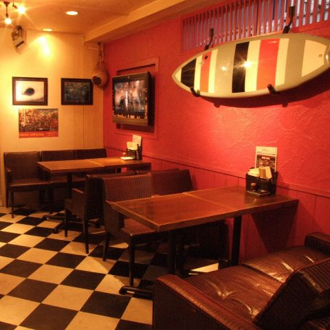
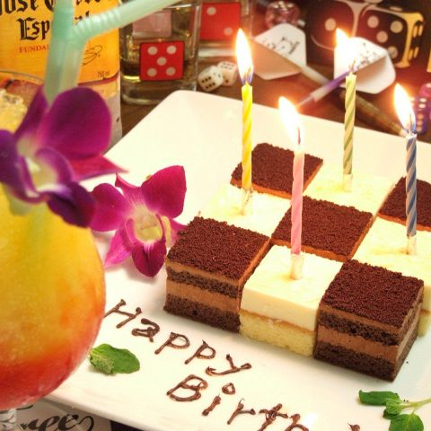
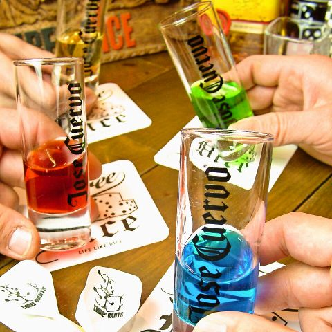
Our Bar
藤沢で18年以上、地元の皆さまに愛されてきたBARです。気取らずフランクに、一人でも仲間とでも気軽に立ち寄れるお店です。カウンターでゆっくりお酒を楽しむのはもちろん、ご飯だけのご利用も大歓迎。ダーツやスポーツ観戦もお楽しみいただけます。DICE KITCHENの料理とお酒は、すべてこのカウンターから生まれました。
ケータリングでDICE KITCHENを気に入っていただけたら、ぜひお店にも遊びに来てください。
人気メニュー：No.1 スリーダイス特製ジャークチキン／No.2 とろ～りたまごのチーズインオムライス
誕生日や記念日には、メッセージ付きのケーキプレートもご用意できます。
住所：〒251-0023 神奈川県藤沢市鵠沼花沢町1-4 太陽第12ビル 1階
営業時間：18:00〜翌5:00（定休日：日曜日）
アクセス：藤沢駅南口から徒歩2分